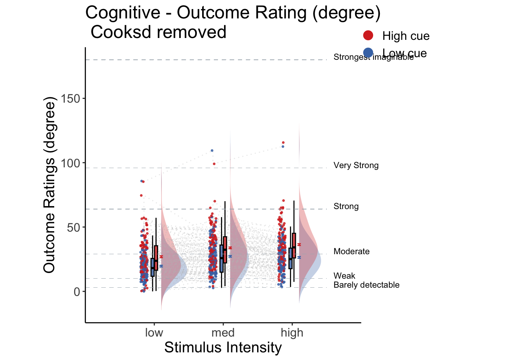

5 beh :: outcome ~ cue * stim
What is the purpose of this notebook?
Here, I plot the outcome ratings as a function of cue and stimulus intensity.
- Main model:
lmer(outcome_rating ~ cue * stim) - Main question: do outcome ratings differ as a function of cue type and stimulus intensity?
- If there is a main effect of cue on outcome ratings, does this cue effect differ depending on task type?
- Is there an interaction between the two factors?
- IV:
- cue (high / low)
- stim (high / med / low)
- DV: outcome rating


5.3 Cue X Stim Raincloud plots
- IV: Cue x stim
- DV: Outcome rating
## TableGrob (1 x 2) "arrange": 2 grobs
## z cells name grob
## 1 1 (1-1,1-1) arrange gtable[layout]
## 2 2 (1-1,2-2) arrange gtable[guide-box]
## TableGrob (1 x 2) "arrange": 2 grobs
## z cells name grob
## 1 1 (1-1,1-1) arrange gtable[layout]
## 2 2 (1-1,2-2) arrange gtable[guide-box]## TableGrob (1 x 2) "arrange": 2 grobs
## z cells name grob
## 1 1 (1-1,1-1) arrange gtable[layout]
## 2 2 (1-1,2-2) arrange gtable[guide-box]
5.3.1 Cue X Stim linear model
# stim_con1 <- "STIM_linear"
# stim_con2 <- "STIM_quadratic"
# iv1 <- "CUE_high_gt_low"
# dv <- "OUTCOME"
library(Matrix)
library(glmmTMB)## Warning in checkDepPackageVersion(dep_pkg = "TMB"): Package version inconsistency detected.
## glmmTMB was built with TMB version 1.9.6
## Current TMB version is 1.9.10
## Please re-install glmmTMB from source or restore original 'TMB' package (see '?reinstalling' for more information)
library(TMB)
library(RcppEigen)
df <- data[!is.na(data$OUTCOME), ]
fullmodel <-
lmer(
OUTCOME ~ CUE_high_gt_low * STIM_linear + (
CUE_high_gt_low * STIM_linear |
subject
),
data = df
)## boundary (singular) fit: see help('isSingular')
# TODO:: troubleshoot
# m <- glmmTMB(OUTCOME ~ CUE_high_gt_low * STIM_linear + ( CUE_high_gt_low * STIM_linear | subject),
# data = df,
# control = glmmTMBControl(rank_check = "adjust"))
# #start = start_values,
#
# summary(m)
sjPlot::tab_model(fullmodel,
title = "Multilevel-modeling: \nlmer(OUTCOME ~ CUE * STIM + (CUE * STIM | sub), data = pvc)",
CSS = list(css.table = '+font-size: 12;'))| OUTCOME | |||
|---|---|---|---|
| Predictors | Estimates | CI | p |
| (Intercept) | 28.40 | 25.98 – 30.82 | <0.001 |
| CUE high gt low | 8.06 | 6.69 – 9.44 | <0.001 |
| STIM linear | 8.16 | 6.86 – 9.46 | <0.001 |
|
CUE high gt low × STIM linear |
2.60 | 0.29 – 4.91 | 0.027 |
| Random Effects | |||
| σ2 | 352.77 | ||
| τ00subject | 160.46 | ||
| τ11subject.CUE_high_gt_low | 27.66 | ||
| τ11subject.STIM_linear | 10.75 | ||
| τ11subject.CUE_high_gt_low:STIM_linear | 3.11 | ||
| ρ01 | 0.37 | ||
| 0.61 | |||
| -0.28 | |||
| N subject | 110 | ||
| Observations | 6220 | ||
| Marginal R2 / Conditional R2 | 0.073 / NA | ||
5.5 Cue X Stim Lineplot
Instead of the rain cloud plots, here, I plot the lines and confidence interval for each cue x stim combination. Plotted per task.

5.7 cue contrast average across intensity
## [1] "pain"
## [1] 8.203947
## [1] 0.8871599
## [1] "high vs. low cue"
## [1] "low" "61.6884121864272" "2.860880140792"
## [1] "high" "70.2234946843967" "2.85365310068339"
## [1] "vicarious"
## [1] 7.69279
## [1] 0.6584873
## [1] "high vs. low cue"
## [1] "low" "22.7808026788692" "1.0440409512757"
## [1] "high" "30.636407755966" "1.20480098494488"
## [1] "cognitive"
## [1] 8.019356
## [1] 0.7038933
## [1] "high vs. low cue"
## [1] "low" "24.308987672219" "1.19373008209444"
## [1] "high" "32.34623546235" "1.37653031156445"5.8 cue contrast average across expectation
## [1] "pain"
## [1] 35.05694
## [1] 1.989724
## [1] "high vs. low cue"
## [1] "low" "44.6580941421071" "3.02430373086043"
## [1] "high" "79.4644108331637" "2.85584321656255"
## [1] "vicarious"
## [1] 33.25123
## [1] 1.503149
## [1] "high vs. low cue"
## [1] "low" "14.9314711535258" "1.00860750130232"
## [1] "high" "48.146271174259" "1.54236667339445"
## [1] "cognitive"
## [1] 30.7638
## [1] 1.53046
## [1] "high vs. low cue"
## [1] "low" "18.5956241315907" "1.20836045474955"
## [1] "high" "49.3940294143433" "1.73640570707356"